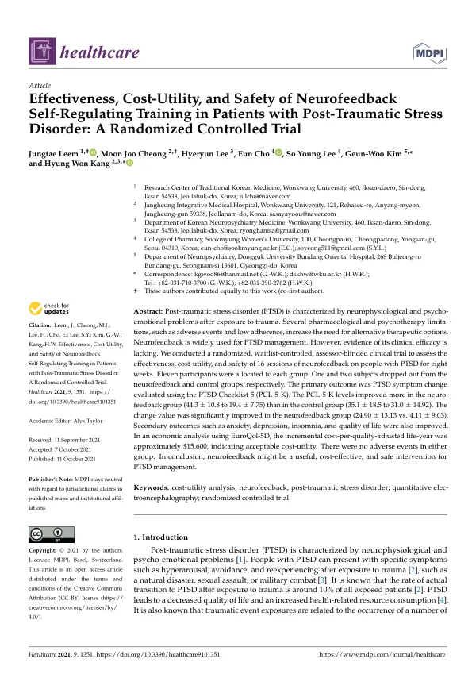

Effectiveness, Cost-Utility, and Safety of Neurofeedback Self-Regulating Training in Patients with Post-Traumatic Stress Disorder: A Randomized Controlled Trial
Leem J, Cheong MJ, Lee H, Cho E, Lee SY, Kim GW, Kang HW
Healthcare 9(10):1351

첫 장 · 오픈액세스First page · open access
논문 소개Summary
외상후스트레스장애는 약물치료와 인지행동치료가 표준이지만 성기능장애와 수면장애, 체중 증가 같은 부작용과 낮은 순응도가 따라옵니다. 노출치료는 환자에게 외상을 다시 겪게 하는 과정이라 그 자체로 고통스럽습니다. 뉴로피드백은 뇌파를 보면서 스스로 조절을 훈련하는 방식이라 외상에 다시 노출시키지 않는다는 장점이 있고 이미 널리 쓰이지만, 임상 효과의 근거는 부족했습니다.
무작위 배정, 대기자 대조, 평가자 눈가림 임상시험입니다. 22명을 뉴로피드백군과 대기군에 11명씩 나누고 8주 동안 16회의 훈련을 했습니다. 일차 평가변수는 한국판 외상후스트레스장애 체크리스트였습니다. 참여자의 외상 원인은 대부분 가정폭력이었고 교통사고와 학교폭력이 뒤따랐으며, 모두 6개월 이상 증상이 이어진 분들입니다. 임상 결과와 함께 유로퀄 5차원을 써서 비용 대비 효용도 함께 계산했습니다.
뉴로피드백군의 점수는 44.3에서 19.4로 낮아졌고 대기군은 35.1에서 31.0으로 움직였습니다. 변화량의 차이는 24.90 대 4.11로 유의했습니다. 불안과 우울, 불면, 삶의 질도 함께 좋아졌습니다. 질보정생존년당 추가 비용은 약 15,600달러로 수용할 만한 범위였고 이상반응은 어느 군에서도 없었습니다.
한계가 결과만큼 중요합니다. 처음 계획한 표본은 군당 23명이었으나 코로나19로 목표에 이르기 전에 모집을 닫았습니다. 최종 분석에 들어간 사람은 10명과 9명입니다. 대조군이 위약이 아니라 대기자이므로 자연 경과와 관심을 받는 효과, 평균으로의 회귀를 걸러내지 못합니다. 저자들도 위약 대조를 적용하기 어려운 중재라는 점을 인정하면서 대기자 대조나 직접 비교가 차선이라고 적었습니다.
경제성 분석의 한계도 스스로 적어 두었습니다. 자료를 임상시험 기간에만 모았으므로 52주까지의 효용은 12주 시점 값이 유지된다고 가정했고, 표본과 기관 수가 적어 추정치의 불확실성이 큽니다. 자료가 모자라 민감도 분석도 하지 못했습니다. 다음 연구는 1년 넘게 추적하며 위약 대조나 직접 비교로 설계해야 한다고 제언했습니다.
Post-traumatic stress disorder is standardly treated with medication and cognitive behavioural therapy, but these bring adverse effects — sexual dysfunction, sleep disturbance, weight gain — and low adherence. Exposure therapy is by its nature a painful process, requiring the patient to face the trauma again. Neurofeedback trains self-regulation while watching one's own brainwaves and so does not re-expose the patient; it is already widely used, yet evidence of clinical efficacy was lacking.
This was a randomised, waitlist-controlled, assessor-blinded trial. Twenty-two participants were allocated 11 each to neurofeedback or waitlist and given 16 training sessions over eight weeks. The primary outcome was the Korean version of the PTSD Checklist-5. Trauma arose most often from domestic violence, followed by traffic accidents and school violence, and all participants had symptoms persisting at least six months. Alongside clinical outcomes, cost-utility was calculated using the EuroQol-5D.
Scores in the neurofeedback group fell from 44.3 to 19.4, while the waitlist group moved from 35.1 to 31.0. The difference in change values — 24.90 against 4.11 — was significant. Anxiety, depression, insomnia and quality of life improved as well. The incremental cost per quality-adjusted life year was about US$15,600, within an acceptable range, and no adverse events occurred in either group.
The limitations matter as much as the results. The planned sample was 23 per group, but recruitment closed short of target because of COVID-19; ten and nine participants entered the final analysis. The control was a waitlist rather than a placebo, so natural course, the Hawthorne effect and regression to the mean are not filtered out. The authors acknowledge that a placebo design is difficult for this intervention and describe a waitlist or head-to-head control as the best available alternative.
They also state the limits of the economic analysis themselves. Because data were collected only during the trial, utility to week 52 was assumed to hold at the week-12 value, and the small sample and few sites leave considerable uncertainty in the estimates. A sensitivity analysis could not be performed for want of data. Future studies, they recommend, should follow participants beyond a year with a placebo-controlled or head-to-head design.
인용Cite
Leem J, Cheong MJ, Lee H, Cho E, Lee SY, Kim GW, Kang HW. Effectiveness, Cost-Utility, and Safety of Neurofeedback Self-Regulating Training in Patients with Post-Traumatic Stress Disorder: A Randomized Controlled Trial. Healthcare. 2021;9(10):1351. doi:10.3390/healthcare9101351